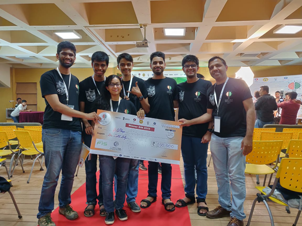
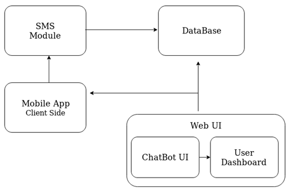
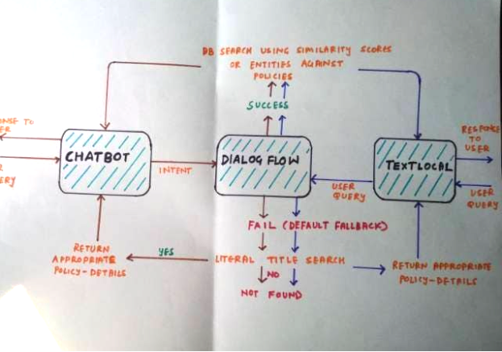

HONESTY
A PWA cum chatbot application system that furnishes users with government sponsored policies, schemes and loans
There are a lot of government-sponsored schemes that citizens can avail of for different purposes in various different domains and sectors. However, these are listed on various different government websites and portals, which require prior knowledge, time, and expertise. Moreover, the rural and underprivileged population who can make the most use of these schemes and loans, and are the targeted users, are themselves unaware of it. In times of need, browsing multiple sites for the relevant screen for technologically averse people makes the current system flawed and inaccessible.
We propose a PWA cum chatbot application for EGovernance that consolidates all these schemes, loans, and policies and provides an accessible system for all citizens of India.
This project was made as a part of the Smart India Hackathon 2019 (https://www.sih.gov.in/sih2019), during my 2nd year of engineering. Shortlisting from a list of 229 problem statements, we submitted our idea proposals for six problems. With a total of around 37k+ idea submissions for different problem statements, our idea for “Chatbot for E-Governance” was selected. For a period of 2 weeks, we worked relentlessly, day and night, building a solution for our idea. During the intense 36 hours of the hackathon, we gave multiple presentations, each time adding more and more features to impress the judges.
For the last round, we were allotted 5 minutes for the presentation. We had planned the entire flow of the presentation, however time flew past and we still had a lot to present. We were a bit disheartened as even though we had all the features the judges had demanded, we couldn’t present them well. However, this long-fought battle had eventually come to an end, so we all rejoiced and hoped that our hard work would pay off and fortunately it did. As it is said that luck favors the worthy, we were eventually declared as winners. We were elated and thrilled when our team was announced as the winning team! It was quite a wonderful experience.
Build a mega bot (chatbot) that provides information related to all government-sponsored loans/insurance schemes in a single place. This interactive chatbot should be able to pull information from various sources like NABARD, RBI, etc, and should be able to assist the users with the relevant information.
 Our initial idea proposal submission consisted of the following features:
- Users can search for government policies and schemes by simply interacting with the chatbot either via text or speech.
- A database for all the policies and user queries is maintained and is constantly updated.
- A recommendation-based system is implemented, which learns from the user’s recent searches. Additionally, there’s a personalized dashboard for each user, where their pinned policies and recommended ones are displayed.
- For rural areas, which lack proper Internet connectivity, along with multi-language support, there is an offline mode as well, wherein the user can interact via SMS, which will update the database, along with a backup facility, in case of any connection failure.
Throughout the hackathon, we kept updating the below diagram and used it to represent and explain our system to the judges.

Chatbot Interface
All the user queries are fetched via this interface. It is a chatbox on our application portal, website and PWA, where users can ask their queries. From here, the queries are further passed to DialogFlow. The multilingual queries of the user are also entertained as we do the end-to-end translation and pass it to Dialogflow.
Example: User enters, ”I want to get an agricultural business loan”.
DialogFlow
Dialogflow is a natural language understanding platform used to design and integrate a conversational user interface into mobile apps, web applications, devices, bots, interactive voice response systems, and related uses. The query obtained is pre-processed and the intent of that query is found out here. This intent is encoded via a word2vec model and its similarity scores are mapped with each already preprocessed and encoded policy to fetch the most relevant features. If intent seems irrelevant, then we first do a literal title search of the scheme or policy in our database and return those details. If no such policy is found, we return the default fallback intent. Along with this, a literal search of policy is also allowed.
In our example, Dialogflow finds the intent of the user query: agriculture, business, and loan, and using similarity scores, relevant policies are returned to the user in the chatbox.
TextLocal
This module helps the user to interact with the chatbot in offline mode. This SMS service is used to entertain the user queries and on passing them to our model, we fetch the necessary results. Similar to the chatbox, user queries are sent to Dialogflow and responses are sent via SMS through our backend. We also utilized the calling feature wherein the user can call a number and ask for policies.
For our chatbot, we had to gather the most important thing of all, data, i.e. the actual Govt. sponsored policies and schemes. However, there was neither an API for fetching Govt. policies nor there was a free API for fetching news articles which may contain Govt. policies. So we had to rely on scraping the Internet for various policies. However, the data scraped from the Internet was scarce as well as unstructured so we had to clean the data before actually using it. We did this using Natural Language Processing (NLP), surfing multiple websites for data and efficiently organizing them into one large dataset.
The database for policies and users was maintained in MongoDB. Our policy database was updated with policies from different platforms and each policy was preprocessed and encoded. The policy structure was stored with relevant fields:
Description: To provide more information for the policy/ scheme
Link: Link to the scheme on the government portal
Title: Name of the scheme
Documents: Necessary documents need to apply for the scheme
Keywords: Encoded policy details for computation of similarity score
Website
The web portal was built using the Flask framework. While the chatbox was available freely on the website, to avail more features, users were required to register to the portal. Within their account, users had a personalized dashboard where they could login and pin their favorite policies. Additionally, the website also had a search feature where people could browse all policies consolidated from different platforms.
Progressive Web App (PWA)
We converted our web app into a PWA, so as to provide offline caching and provide the same user experience as a native mobile application.
This app can be downloaded via the website (the localhost server) which we had tunneled to a URL via ngrok.